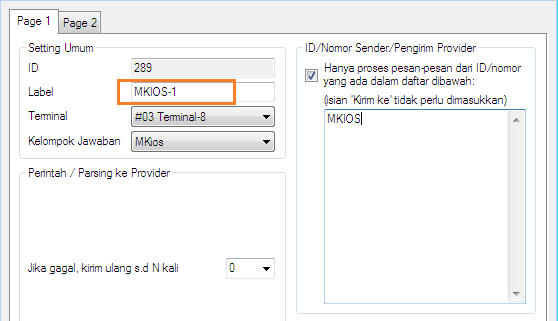
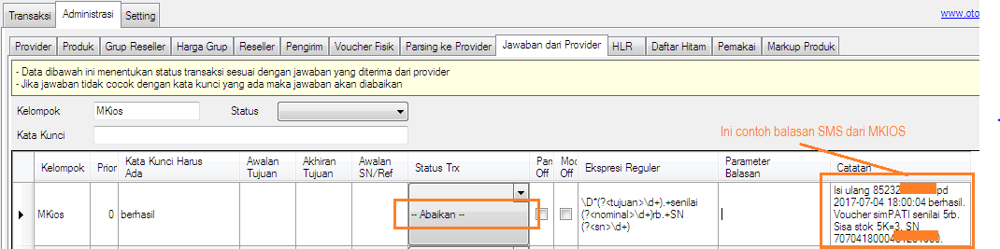

Auto cek stok MKIOS
Sesuai dengan namanya fitur ini berguna ketika terdapat transaksi berstatus gagal kirim pada Modul Dial berisi chip MKIOS, maka akan melakukan cek stok MKIOS secara otomatis; jika stok terpotong transaksi akan otomatis disukseskan; dan jika tidak terpotong transaksi akan otomatis dikirim ulang. Ini akan sangat membantu pengelola server dalam memonitor jalannya transaksi.
Fitur ini hanya tersedia di OtomaX Edisi Ultimate klik disini, sehingga jika Anda membutuhkan fitur ini dan Edisi OtomaX Anda belum Ultimate perlu melakukan upgrade dahulu klik disini; dan satu lagi, fitur ini mulai tersedia di OtomaX versi 3.7.4 atau lebih tinggi, update dahulu kalau belum menggunakan versi tersebut klik disini.
Untuk memanfaatkan fitur ini tidak memiliki setting khusus sebab sudah built-in di dalam sistem OtomaX, Anda
hanya perlu memberi nama Label modul Dial yang berisi chip MKIOS dengan nama diawali dengan
kata: MKIOS (pakai huruf besar semua, besar kecilnya huruf berpengaruh) sebagai
penanda modul yang akan menjadi target berjalannya fitur ini, pilih modul Dial -> klik kanan -> klik
Setting, perhatikan gambar di bawah ini:

Kemudian agar fitur ini bekerja optimal pastikan balasan SMS dari MKIOS diabaikan di Jawaban dari
Provider, contohnya seperti di bawah ini (lakukan hal sama pada balasan SMS dari MKIOS yang lain):

Dengan fitur di atas Anda tidak perlu lagi melakukan cek stok ketika terdapat transaksi berstatus gagal
kirim karena sudah ditangani oleh sistem OtomaX secara otomatis.
Catatan: Sejak balasan cek stok MKIOS mengalami perubahan pada tanggal 23 Agustus 2017 fitur Auto cek stok MKIOS tidak bekerja, sebab konfigurasi built-in belum mendukung, tunggu update selanjutnya.